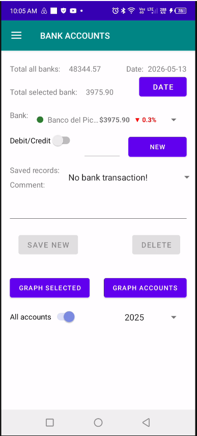

Sincronização Desktop & Mobile
Interface de sincronização conectando o aplicativo móvel ao software desktop de gerenciamento financeiro.

Interface Principal do Aplicativo Móvel
Painel principal do aplicativo móvel oferecendo acesso às ferramentas financeiras, controle de despesas e análises bancárias.

Indicador Comparativo de Despesas Mensais
Indicador exibindo as despesas mensais atuais para a data selecionada em comparação com o mesmo período do mês anterior.

Registro de Transações Bancárias
Interface principal para registrar e gerenciar transações bancárias diretamente pelo aplicativo móvel.

Indicador de Saldo das Contas Bancárias
Indicador mostrando contas bancárias, saldos atuais e tendências de saldo comparadas ao mesmo dia do mês anterior.

Análise Mensal de Saldo das Contas
Gráfico exibindo os saldos mensais da conta bancária selecionada ou o total combinado de todas as contas durante o ano selecionado.

Distribuição Anual dos Saldos Bancários
Gráfico de rosca visualizando os saldos anuais finais distribuídos entre todas as contas bancárias.

Análise Radar de Despesas
Gráfico radar exibindo despesas mensais totais ou despesas anuais para o ano selecionado.

Distribuição Anual de Despesas
Gráfico de rosca visualizando a distribuição anual de despesas para o ano selecionado.